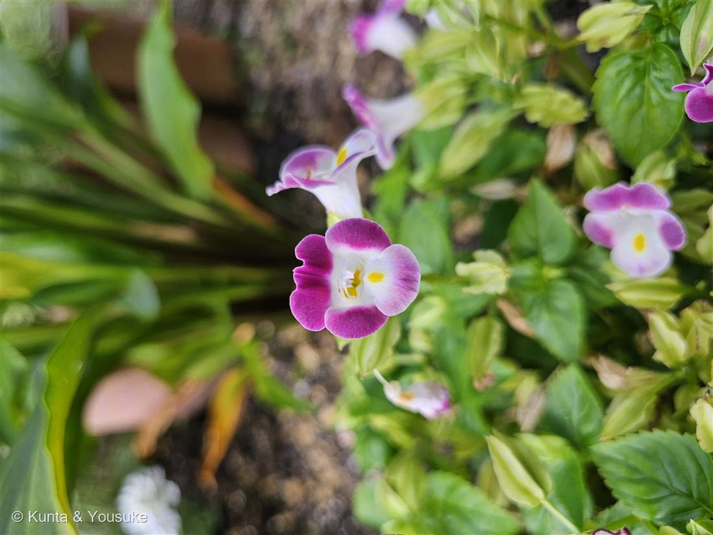
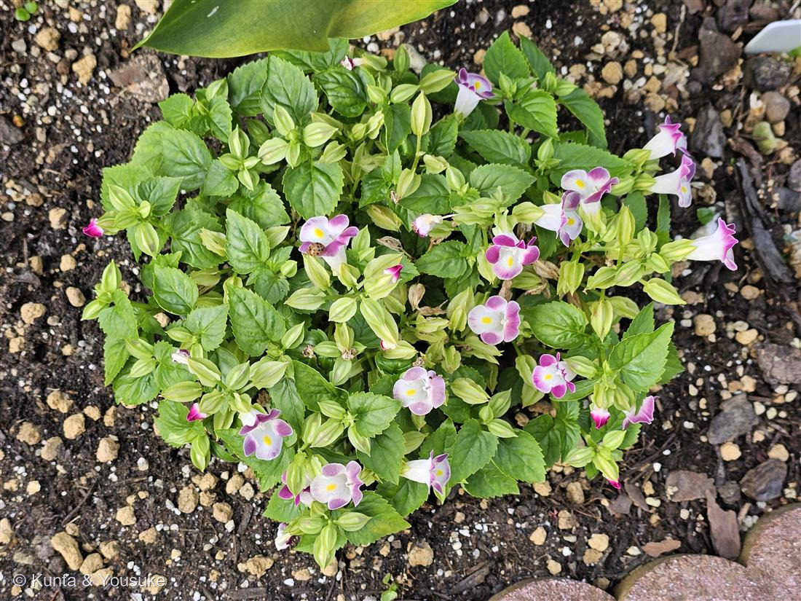

地図を読み込んでいるよ…
🔍 写真も地図も、押しているあいだ拡大して見られるよ（スマホは指を置いてすこし待ってね）。
🌍 の地図＝この子がもともと自生している場所を緑に。東南アジア〜インドシナ（ベトナムなど）が原産。日本では夏の花壇・鉢の定番として広く育てられる。
⭐東南アジア〜インドシナが原産——ベトナムなどインドシナ半島を中心とした暖かい地域の一年草。⚠地図は国ごと塗っているけど、もとはその一部だよ。⚠日本は塗っていない——この子は観賞用に育てられている園芸植物で、日本はふるさとじゃない（港の花壇で咲いていた）。⭐暑さに強いのは、この暖かいふるさとゆずり。116フクシア（涼しい山地生まれで暑さに弱い）と対照的だね。
⚠ 地図は国（日本と中国だけ県・省）までしか塗れないから、ほんとうの分布より広く見えていることがあるよ。地図はだいたいの場所。正確なところは、上の文を見てね。
トレニア
Torenia fournieri
別名 · ナツスミレ（夏菫）／ハナウリクサ（花瓜草）／英名 wishbone flower／ 原産 · 東南アジア（インドシナ）／ 見どころ · ⭐唇形の花と“叉骨”の雄しべ
アゼナ科 · Linderniaceae（トレニア属 Torenia）── 図鑑で初めてのアゼナ科・シソ目（旧ゴマノハグサ科）
燻太さんの見立て「トレニアかな? 雰囲気はシソとかに近い気がする。」──どちらも的中。科はアゼナ科だけど、“目”はシソ目でドンピシャだよ。
名前と学名の由来 ── リンネが“標本を送ってくれた人”に贈った、3人目
- ⭐⭐属名 Torenia は、リンネがオーロフ・トレーン（Olof Torén）に捧げた名前。スウェーデン東インド会社の牧師で、アジアへ航海し、採った植物をリンネに送った人。📌110 サルスベリ（Lagerström）・115 アルストロメリア（Alströmer）に続く、「リンネが“標本を送ってくれた人”に贈った学名」仲間の3人目だよ。
- 種小名 fournieri は、フランスの植物学者ウジェーヌ・フルニエ（Eugène Fournier）にちなむ。
- ⭐和名「ナツスミレ（夏菫）」＝夏に咲いて、花がスミレ／パンジーに似ることから。「ハナウリクサ（花瓜草）」＝同じ科の雑草「ウリクサ」に似た花、から（そのウリクサが、この子のおまけ）。
- ⭐英名「wishbone flower（ウィッシュボーン＝鳥の叉骨）」＝花の中で、2本の雄しべがアーチを組んで、叉骨（Y字）のように見えることから。写真①ののどの奥に、ちょっと見えるよ。
この植物のこと
- アゼナ科トレニア属の一年草。図鑑で初めてのアゼナ科だよ。シソ目（Lamiales）の仲間で、東南アジア〜インドシナの原産。
- ⭐⭐花は「唇形（二唇）の筒花」。上下に開く筒の、のどに黄色い斑（蜜標）、下のくちびるに紫の縁取り。この黄色は、虫に「蜜はこっち」と教える道しるべだよ。
- ⭐⭐⭐wishbone のしかけ：のどをのぞくと、2本の雄しべが上でアーチを組んで触れ合っている（叉骨のよう）。虫が蜜を求めて潜り込むと、このアーチが動いて花粉がつく——受粉のための、ばね仕掛けなんだ。
- ⭐暑さに強い。日本の夏の花壇・鉢の定番で、半日陰でもよく咲き、こぼれ種でも増える。116 フクシア（暑さに弱い）とは、ちょうど反対の性格だね。
- 🐞写真②の株に、小さなテントウムシがのっていたよ。アブラムシを食べてくれる、花壇の味方。
コラム ── アゼナ科ってどんな一族？（燻太さんの質問）
- 🌾主役は、田んぼや水辺の小さな雑草たち。アゼナ（畦菜）＝科の名の主で、田んぼの畦（あぜ）に生える地味な小草。ウリクサ（トレニアの和名の“ウリクサ”）、アゼトウガラシなど、目立たない水辺の草が多い。だから「畦（あぜ）」の名なんだ。
- 🌸トレニアは、その一族の“華やかな例外”。園芸で大きく、色あざやかに見せる子。
- ⭐⭐そして「復活草（resurrection plant）」の Craterostigma。アフリカ乾燥地の草で、体の水を98%失ってカラカラになっても、雨が来ると数日で生き返る。乾燥耐性研究の有名なモデル植物だよ。昔この復活草は「Torenia plantaginea」＝トレニア属に分類されていた——トレニアと復活草は、近い親戚なんだ。
- ——地味な田んぼの草・華やかなトレニア・砂漠の復活草。ぜんぶ同じアゼナ科。ひとつの科の中に、いろんな生き方が入ってる。
同定について ── トレニアか、そして「シソに近い」は当たり？
- ⭐唇形の筒花＋のどの黄斑（蜜標）＋wishbone の雄しべ＋鋸歯のある対生の葉——この組み合わせは、トレニアならでは。
- ⭐⭐燻太さんの「雰囲気がシソに近い気がする」＝科は外しても“目”で的中。トレニアはシソ科そのものじゃない（アゼナ科）けれど、同じシソ目（Lamiales）。左右相称の唇形の筒花は、シソ目みんなの合図だから、雰囲気でそこを当てたのはすごいよ。
- 📌昔はゴマノハグサ科に入れられていた（111 ビロードモウズイカと同じで、あとから科が分けられた組）。
参考：みんなの趣味の園芸「トレニア」（アゼナ科トレニア属・東南アジア原産の一年草／唇形花・のどに黄斑／暑さに強く夏花壇向き）／Wikipedia「Torenia」（属名はリンネがOlof Torénに献名／2本の雄しべが叉骨状＝wishbone flower／Linderniaceae（旧Scrophulariaceae））／Wikipedia「Craterostigma」（同じLinderniaceaeの復活草・98%脱水しても復活／かつてTorenia属に分類）